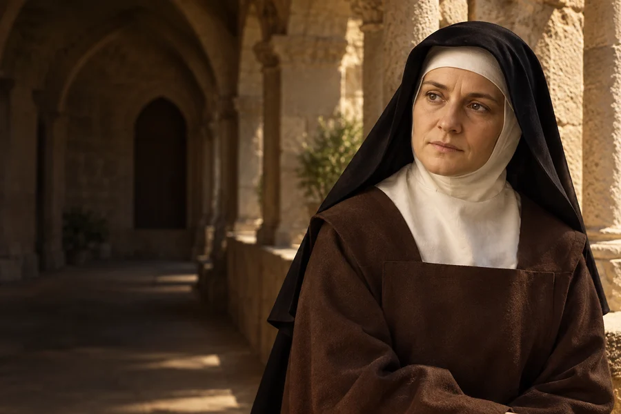

Pytanie o prawdę
Zapisz pytanie, które naprawdę Cię nurtuje, i znajdź czas na spokojne poszukiwanie odpowiedzi.
1891–1942
Obchód liturgiczny: 9 sierpnia
Filozofka i karmelitanka, zamordowana w Auschwitz.
Filozofka z Wrocławia, nauczycielka i karmelitanka. Jej życie połączyło poszukiwanie prawdy z doświadczeniem prześladowania Żydów w Europie.
Poznaj historię jej życia →Poszukiwanie prawdy może łączyć uważne myślenie, odwagę zmiany i pamięć o cierpieniu innych.
Refleksja redakcji W Modlitwie.Narodziny w rodzinie żydowskiej.
Studia filozoficzne u Edmunda Husserla.
Przyjęcie chrztu w Kościele katolickim.
Wstąpienie do klasztoru w Kolonii.
Aresztowanie, deportacja i śmierć.
Jan Paweł II ogłasza Teresę Benedyktę świętą.

Współczesne wyobrażenie artystyczne.Około 3 min czytania · 5 rozdziałów
Edyta Stein urodziła się w 1891 roku we Wrocławiu w religijnej rodzinie żydowskiej. Ojciec zmarł, gdy była mała, a matka prowadziła rodzinny interes i wychowywała dzieci. Jako nastolatka Edyta przestała praktykować religię. Interesowała się nauką, sprawami społecznymi i sytuacją kobiet. Studiowała we Wrocławiu, następnie przeniosła się do Getyngi, gdzie poznała filozofa Edmunda Husserla.
W Getyndze zetknęła się z fenomenologią, nurtem zachęcającym do uważnego opisu doświadczenia. Filozofia nie była dla niej jedynie akademickim zawodem: stanowiła sposób stawiania pytań o człowieka, poznanie i prawdę. Jej zainteresowania obejmowały również psychologię oraz wychowanie.
Wrocław nosił wówczas nazwę Breslau i należał do Niemiec. To ważny kontekst jej rodzinnej i naukowej biografii.
W czasie pierwszej wojny światowej odbyła kurs pielęgniarski i pracowała w szpitalu polowym. Kontynuowała badania filozoficzne pod kierunkiem Husserla, którego została asystentką. Doktorat poświęciła zagadnieniu wczucia, czyli poznawania przeżyć drugiego człowieka. Zabiegała o samodzielną pracę akademicką, lecz droga do profesury była dla kobiety w ówczesnych Niemczech bardzo trudna.
Praca pielęgniarki oznaczała kontakt z ludźmi cierpiącymi z powodu wojny i chorób. Po zakończeniu służby w szpitalu powróciła do pracy naukowej. Jej badania nad empatią do dziś są czytane przez osoby zainteresowane filozofią relacji międzyludzkich.
Wśród lektur, które towarzyszyły jej duchowym poszukiwaniom, znalazła się autobiografia Teresy z Ávili. W 1922 roku Edyta przyjęła chrzest w Kościele katolickim. Przez kolejne lata uczyła w Spirze, tłumaczyła teksty filozoficzne i prowadziła wykłady. Podejmowała kwestie wychowania oraz roli kobiet. Chrześcijańska wiara nie oznaczała dla niej wyrzeczenia się pamięci o żydowskiej rodzinie.
Wykładając i tłumacząc, starała się prowadzić dialog między filozofią współczesną a tradycją chrześcijańską. Pracowała między innymi nad przekładem tekstów Tomasza z Akwinu. W tym okresie podejmowała też wykłady dotyczące kształcenia i miejsca kobiet w społeczeństwie.
Po dojściu nazistów do władzy przepisy wymierzone w osoby żydowskiego pochodzenia uniemożliwiły Edycie nauczanie. W 1933 roku wstąpiła do karmelu w Kolonii i przyjęła imię Teresa Benedykta od Krzyża. W klasztorze kontynuowała pisanie. W 1938 roku, wobec narastających prześladowań, przeniesiono ją do klasztoru w Echt w Holandii.
W klasztorze przygotowała swoje ważne dzieło filozoficzne „Byt skończony a byt wieczny”. Pisała również o dziejach własnej rodziny. Był to dla niej sposób utrwalenia doświadczenia żydowskiego życia rodzinnego w czasie, gdy nazistowska propaganda szerzyła antysemicką nienawiść.
W sierpniu 1942 roku została aresztowana wraz z siostrą Różą. Po przejściu przez obóz Westerbork obie deportowano do niemieckiego obozu Auschwitz, gdzie zostały zamordowane. Watykański życiorys podaje 9 sierpnia jako prawdopodobną datę śmierci Edyty. Jan Paweł II kanonizował ją w 1998 roku; rok później ogłosił ją współpatronką Europy. W jej historii spotykają się pamięć o Zagładzie, filozofia i duchowość karmelitańska.
W 1999 roku Jan Paweł II ogłosił ją jedną ze współpatronek Europy. Wspomnienie liturgiczne przypada 9 sierpnia. Jej los nie powinien przesłaniać losów innych deportowanych: zginęła jako jedna z wielu osób prześladowanych przez nazistowski system ze względu na żydowskie pochodzenie.
Zapisz pytanie, które naprawdę Cię nurtuje, i znajdź czas na spokojne poszukiwanie odpowiedzi.

Przeczytaj fragment książki, który pomoże Ci spojrzeć inaczej na bliską Ci sprawę.

Poznaj historię konkretnej osoby prześladowanej podczas drugiej wojny światowej.
Ojcze nasz, któryś jest w niebie, święć się imię Twoje; przyjdź królestwo Twoje; bądź wola Twoja jako w niebie, tak i na ziemi. Chleba naszego powszedniego daj nam dzisiaj; i odpuść nam nasze winy, jako i my odpuszczamy naszym winowajcom; i nie wódź nas na pokuszenie, ale nas zbaw ode złego. Amen.
Tradycyjny tekst modlitwy; utrwalony polski wariant.Ojcze nasz →